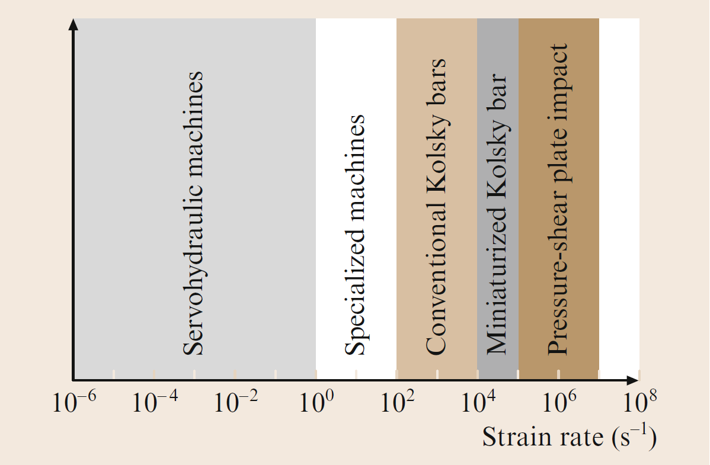

A split Hopkinson pressure bar (SHPB) is a specialized tool used in mechanical testing to measure the dynamic properties of materials under high-strain-rate conditions.
It consists of two bars of the same material, each of which has a small, cylindrical impactor attached to one end.
The bars are mounted on opposite sides of the test specimen, and the impactors are fired simultaneously at the specimen, causing it to deform and generate a wave that propagates through the bars.
Sensors attached to the bars measure the strain and stress in the bars, which can be used to determine the dynamic properties of the material.
Applications of SHPB
#
- Evaluating the behavior of metals, ceramics, composites, polymers, and other materials under various conditions such as impact, explosion, or high-energy events.
- Determining the dynamic strength of materials used in offshore platforms, advanced armors, pipelines, nuclear pressure vessels, space stations, and other high-stress environments.
- Studying material behavior in compression, tension, and shear modes to gain insight into their performance under different loadings.
- Investigating the effects of temperature, strain rate, loading history, and microstructure on material properties for more comprehensive analysis.
- Researching the high-strain-rate behavior of biological tissues to inform medical research and improve protective equipment for human safety.
- Examining advanced materials, such as shape-memory alloys, that require specialized testing under high-strain-rate conditions for engineering applications.
- Testing impact resistance and fracture properties of brittle materials such as ceramics and glass, contributing to the design of safer and more durable products.
- Evaluating materials used in aerospace and automotive industries, providing insights into the structural integrity and crashworthiness of vehicles and aircraft.
- Assessing the impact response of materials used in protective gear and equipment, such as helmets and body armor, to improve safety standards.
Design Rules of SHPB
#
- Material Selection: Choose bars and specimens of uniform material properties to ensure accurate wave propagation and measurement.
- Bar Length and Diameter: Optimize the length and diameter of the bars to control the wave propagation characteristics and achieve the desired frequency range and strain rate.
- Alignment and Symmetry: Ensure proper alignment and symmetry of the bars and specimen to minimize measurement errors and enhance test repeatability.
- Specimen Geometry: Select an appropriate specimen geometry (e.g., cylindrical or prismatic) and dimensions that best represent the material behavior under test.
- Strain Gauge Placement: Position strain gauges on the incident and transmitted bars to capture the strain and stress waves accurately.
- Wave Propagation Time: Adjust the bar lengths to control the time it takes for the wave to travel from the impact to the strain gauges, allowing for precise data acquisition.
- Velocity Measurement: Utilize optical or electromagnetic methods to measure the impactor's velocity for accurate analysis of strain rate.
- End Conditions: Apply suitable end conditions (e.g., free or fixed) based on the specific testing requirements to avoid wave reflections and maintain uniform stress distribution.
- Specimen-Machine Interaction: Minimize interaction between the specimen and the SHPB system to prevent errors in data collection and maintain the integrity of the test results.
- Data Acquisition and Analysis: Implement a high-speed data acquisition system to accurately capture the rapid changes in strain and stress during the test, and utilize appropriate software tools for data analysis.
- Safety Measures: Follow safety protocols and guidelines during testing to protect personnel and equipment, especially when working with high-energy or hazardous materials.
Test Conditions of SHPB
#
- Temperature Control: Maintain consistent test and specimen temperatures to account for temperature-dependent material properties and avoid thermal gradients that could affect results.
- Humidity Levels: Keep humidity levels low to minimize the impact on the performance of sensors and other electronic components during testing.
- Vibration Minimization: Reduce external vibrations during the test to prevent interference with measurements taken by the strain gauges and other sensors.
- Specimen Alignment: Ensure precise alignment of the specimen with the incident and transmitted bars to guarantee accurate data and consistent stress wave propagation.
- Loading Rate Control: Adjust the loading rate according to the desired strain rate and testing conditions to obtain meaningful data relevant to the material's performance.
- Bar Configuration: Use bar configurations (e.g., bar diameter and length) that suit the specific material and strain rate range to optimize wave propagation and data accuracy.
- Impact Velocity Measurement: Measure the impactor's velocity accurately using optical or other suitable methods to calculate the strain rate and other dynamic parameters.
- Reflection and Dispersion Control: Minimize wave reflections and dispersion in the system by using suitable damping materials and correct bar and specimen geometry.
- Specimen Surface Preparation: Prepare the specimen's surfaces appropriately to ensure even stress distribution and avoid localized stress concentrations or slipping during the test.
- Data Acquisition and Synchronization: Utilize high-speed data acquisition systems and synchronize measurements from different sensors to obtain a complete picture of the specimen's behavior.
- Safety Precautions: Implement safety protocols for personnel and equipment, especially when working with high-energy materials or hazardous conditions during testing.

Experimental techniques used for the development of controlled high strain rate deformations in materials